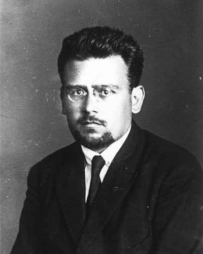

Ideologies / Radical Left
What is Bordigism (Italian Left Communism)?
Bordigism (Italian Left Communism) is a political ideology in the Radical Left family. Bordiga denies that majority voting has any value as a principle. In a class society, he argues, equal votes hide the rule of the owning class, and even inside workers' organisations a vote is only a convenient mechanism, not a source of truth. What makes a communist party is its fixed programme and its discipline, so he proposes replacing democratic centralism with what he calls organic centralism. The current he led also refused to stand in parliamentary elections and rejected alliances with other parties.
The programme decides, not the count of votes.
Defined from: Amadeo Bordiga, The Democratic Principle (1922)
See how close you are to Bordigism (Italian Left Communism) Dare a friend to answer as one


Where Bordigism (Italian Left Communism) stands on 13 axes
Each axis runs from 0 to 100. A score of 50 is the middle. On a classic compass it sits in the Authoritarian Left quadrant.
| Axis | Position | Score | In words |
|---|---|---|---|
| EconomyMarket to Planned | 100 | Very strongly Planned | |
| OwnershipPrivate to Collective | 100 | Very strongly Collective | |
| RightsLiberty to Security | 75 | Strongly Security | |
| GovernmentDemocracy to Autocracy | 80 | Strongly Autocracy | |
| StructureDecentralised to Centralised | 95 | Very strongly Centralised | |
| NationInternationalist to Nationalist | 0 | Very strongly Internationalist | |
| ImmigrationMulticulturalist to Assimilationist | 35 | Leans Multiculturalist | |
| ValuesProgressive to Traditional | 25 | Strongly Progressive | |
| TechnologyAccelerationist to Precautionary | 20 | Strongly Accelerationist | |
| EnvironmentIndustrialist to Environmentalist | 20 | Strongly Industrialist | |
| ReligionSecular to Religious | 0 | Very strongly Secular | |
| MilitaryPacifist to Militarist | 75 | Strongly Militarist | |
| TradeFree Trade to Protectionist | 45 | Balanced |
Ideologies closest to Bordigism (Italian Left Communism)
- Guevarism88% alike
- Trotskyism87% alike
- Posadism86% alike
- Marxism Leninism82% alike
- Blanquism80% alike
Its opposite on this map is Gandhism, at 19%.
Parties near Bordigism (Italian Left Communism)
- Communist Party of ItalyItaly. Programme of the Communist Party of Italy (1921)87% alike
- BolsheviksRussia. Programme of the Russian Communist Party (1919)81% alike
- Communist Party of the Soviet UnionSoviet Union. Programme of the Communist Party of the Soviet Union (1961)76% alike
- Communist LeagueEurope. Manifesto of the Communist Party (1848)75% alike
Common questions
What is Bordigism (Italian Left Communism)?
Bordigism (Italian Left Communism) is a political ideology in the Radical Left family. Bordiga denies that majority voting has any value as a principle. In a class society, he argues, equal votes hide the rule of the owning class, and even inside workers' organisations a vote is only a convenient mechanism, not a source of truth. What makes a communist party is its fixed programme and its discipline, so he proposes replacing democratic centralism with what he calls organic centralism. The current he led also refused to stand in parliamentary elections and rejected alliances with other parties.
What does Bordigism (Italian Left Communism) believe?
In one line: The programme decides, not the count of votes. Its strongest positions are Planned, Collective, Internationalist. Bordiga denies that majority voting has any value as a principle. In a class society, he argues, equal votes hide the rule of the owning class, and even inside workers' organisations a vote is only a convenient mechanism, not a source of truth. What makes a communist party is its fixed programme and its discipline, so he proposes replacing democratic centralism with what he calls organic centralism. The current he led also refused to stand in parliamentary elections and rejected alliances with other parties.
Who founded Bordigism (Italian Left Communism)?
Bordigism (Italian Left Communism) is defined here from The Democratic Principle (1922) by Amadeo Bordiga. The thinker most tied to it is Amadeo Bordiga (1889 to 1970).
Is Bordigism (Italian Left Communism) left wing or right wing?
On a classic two axis compass Bordigism (Italian Left Communism) falls in the Authoritarian Left quadrant, which means the economic left and the authoritarian side. Left and right hide a lot, though, which is why EthosScales scores it on thirteen separate axes.
How is Bordigism (Italian Left Communism) different from Guevarism?
They are close: 88% alike. The biggest gaps are on Nation, where Bordigism (Italian Left Communism) scores 0 and Guevarism scores 25, and Military, where Bordigism (Italian Left Communism) scores 75 and Guevarism scores 95. On each axis, 0 is one end and 100 is the other.
Think this is wrong? Suggest a correction. The scores are editorial estimates.